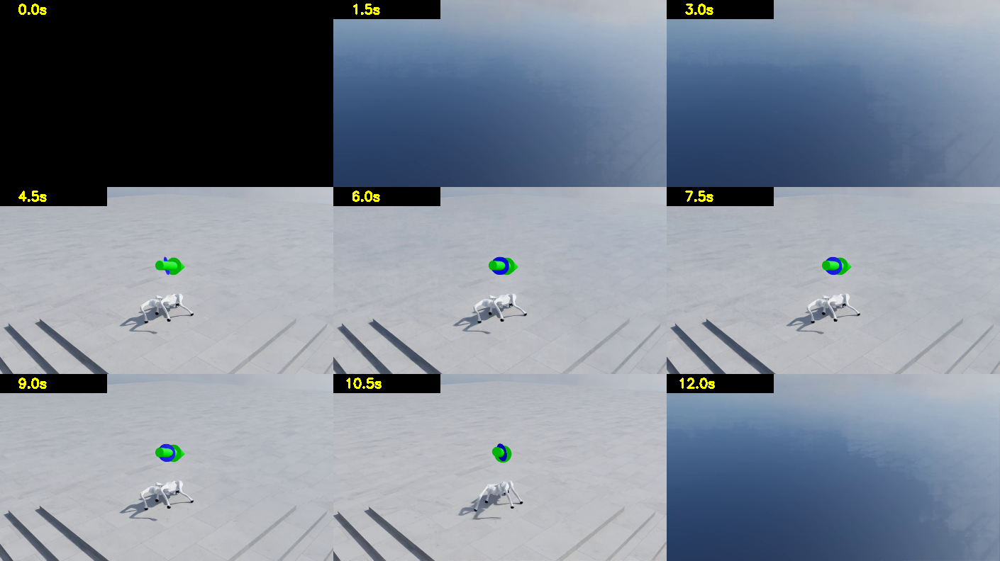
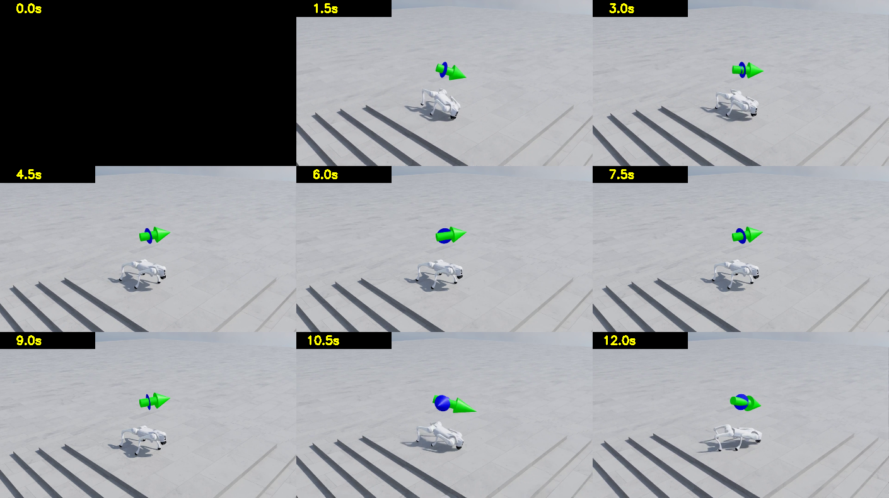

숫자로만 보던 학습 결과를 눈으로 확인한 기록. 보상 13.94 정책이 실제로는 걷지 못하는 것을 영상이 잡았다.
분류: 실험 작성: 오흥재 · 2026-08-09 23:48 근거: 실측 요지: 숫자로만 보던 학습 결과를 눈으로 확인한 기록. 보상 13.94 정책이 실제로는 걷지 못하는 것을 영상이 잡았다. 상태: 확정 판: v1.0
작성 2026-08-09 · 워크스테이션 세션 이 문서의 목적: 학습 결과를 숫자로만 보지 않고 눈으로 확인한 기록을 남긴다. 로봇공학을 모르는 사람이 봐도 "무슨 일이 있었는지" 알 수 있게 쓴다.
모든 이미지는 영상에서 1초 간격으로 프레임을 뽑아 격자로 붙인 것이다. 왼쪽 위 노란 숫자가 영상 안에서의 시각(초)이다.
학습 결과는 보통 숫자 두 개(보상, 에피소드 길이)로만 확인한다. 그런데 숫자만으로는 "로봇이 실제로 어떻게 움직이는지"를 모른다.
영상에서 프레임을 뽑아 나란히 놓으면 로봇이 화면 어디에 있는지가 보인다. 위치가 변하면 걷는 것이고, 안 변하면 제자리에 있는 것이다. 이게 가장 확실한 검증이다.
커널 원칙 3: 사용자가 겪는 층위에서 확인한다. 학습 로그의 숫자는 대리 신호(proxy)다. 영상은 결과 그 자체다.
추출 방법 (도구 설치 불필요, 이미 있는 것으로 됨): imageio_ffmpeg 패키지에 동봉된 ffmpeg + OpenCV. 스크립트 40줄.
⚠️ 영상 파일(mp4)은 이 저장소에 없다.
.gitignore:19가*.mp4를 막는다(팀 정책, 대용량 산출물). 아래 표의assets/video/…경로는 워크스테이션 로컬에만 존재한다. 이 PNG 컨택트시트들이 영상을 대신하는 공유용 증거다. (영상 자체를 공유하려면 정책 예외를 두거나 외부 호스팅이 필요. 미결정)

| 출처 | Unitree 공식 Go2 홍보 영상 (00_reference/unitree-go2-official.mp4) |
| 사양 | 1920×1080 · 50fps · 5.4초 |
아래는 Unitree 공식 YouTube 채널(@unitreerobotics)의 Go2 소개 영상이다(공식 채널 확인 2026-08-12). 우리 레퍼런스 클립(계곡 보행)과 같은 제품·같은 촬영 톤이지만 같은 영상은 아니다: 계곡 클립의 공식 채널 게재 여부는 미확인. 재생은 우리 서버가 아니라 공식 채널 스트리밍 임베드다.
⚠️ 영상 파일을 우리 서버에 재호스팅하지 않는다. 원본이 Unitree 의 저작물(홍보 영상)이라 공개 페이지에 파일로 올리면 저작권 문제가 된다. 프레임 인용(비교·연구 목적)과 공식 채널 YouTube 임베드(위)까지가 합법 경로다. 다운로드 원본은 팀 내부 참고용으로만: NAS
media/reference/(팀 채널 안내 참조).
★ 중요한 사실: 이것은 CG가 아니라 실물 로봇 실사 촬영이다.
보이는 것: 강가 자갈밭, 역광, 물보라 입자가 빛을 받아 반짝임, 얕은 심도로 배경 나무가 흐려짐, 낮은 카메라 앵글, 젖은 돌의 스페큘러, 크기가 제각각인 실제 자갈, 원경의 산.
우리 목표가 "이 수준으로 렌더한다"라면, 정확히는 "실사 촬영물과 구분되지 않는 CG를 만든다". VFX에서 가장 어려운 과제다.
| 항목 | 값 |
|---|---|
| 날짜 | 2026-07-29 (파일 타임스탬프. 이 프로젝트에서 렌더된 가장 오래된 영상) |
| 무엇 | NVIDIA 공식 사전학습 체크포인트(1,500 iteration)를 받아 처음으로 걷는 것을 확인한 기록 |
| 의미 | «우리 환경이 정상이다»의 첫 증거. 이때는 아직 우리가 학습한 정책이 없었다 |
이 영상이 있었기에 이후의 모든 비교(우리 300회 vs 1,500회 vs 공개 정책)가 가능했다. 기록이 늦게 등록된 것 자체가 교훈이다: 산출물은 만든 날 문서에 붙인다.

| 항목 | 값 |
|---|---|
| 실행 | logs/rsl_rl/unitree_go2_rough/2026-08-09_14-00-20 |
| 조건 | 기본 설정 (추가 플래그 없음), seed 42 |
| 학습 시간 | 22.07분 (300 iteration) |
| 처리량 | 22,867 steps/s |
| 마지막 20회 평균 보상 | 13.94 |
| 마지막 20회 평균 에피소드 길이 | 938.7 step (최대 1000) |
| 영상 | 1280×720 50fps 10초 |
읽는 법: 로봇의 화면상 위치를 보라:
| 시각 | 위치 |
|---|---|
| 1.2초 | 중앙 타일에 2마리 |
| 7.5초 | 화면 왼쪽 끝까지 이동 |
| 10.0초 | 왼쪽 가장자리 |
→ 로봇이 화면을 가로질러 이동한다. 걷고 있다.
화살표 읽는 법: Isaac Lab은 로봇 위에 화살표 2개를 그린다.
A에서는 둘 다 뚜렷하다 = 시킨 대로 가고 있다.

| 항목 | 값 |
|---|---|
| 실행 | logs/rsl_rl/unitree_go2_rough/2026-08-09_14-22-51 |
| 조건 | --kit_args="--/physics/collisionApproximateCylinders=true", seed 42 |
| 학습 시간 | 9.48분 (300 iteration): A의 2.3배 빠름 |
| 처리량 | 54,898 steps/s |
| 마지막 20회 평균 보상 | 3.54: A의 25% |
| 마지막 20회 평균 에피소드 길이 | 551.1 step |
읽는 법:
| 시각 | 위치 |
|---|---|
| 1.2초 | 중앙 타일 |
| 10.0초 | 거의 같은 자리 |
→ 10초 동안 화면상 위치가 거의 변하지 않는다. 제자리에서 주저앉아 있다.
화살표: 초록(명령)만 크고 파랑(실제)이 거의 없다 = 시켰는데 못 간다.
collisionApproximateCylinders=true: Go2의 정강이는 원통(cylinder) 충돌체다. 원통은 충돌 계산이 비싸다. 이 스위치는 그 원통을 더 단순한 모양으로 근사하게 만든다.
계산은 2.4배 빨라졌지만, 발이 땅에 닿는 방식이 부정확해져서 로봇이 제대로 못 배웠다.
비유: 달리기 연습을 하는데 신발 밑창의 요철을 뭉갠 것. 계산은 편해지지만 실제로 어떻게 미끄러지는지를 못 배운다.
"B가 2.3배 빠르니 그만큼 더 돌리면 되지 않나?" 를 실측했다.
| A (300회) | B (700회) | |
|---|---|---|
| 벽시계 시간 | 22.07분 | 24.02분 (9% 더 씀) |
| 보상 | 13.94 | 4.80 |
| 에피소드 길이 | 938.7 | 605.4 |
→ B는 2.33배 더 돌리고 9% 더 써도 A의 34%에 머문다. 정체됐다. 플래그 봉인 확정.
| iteration | 보상 | 에피소드 길이 |
|---|---|---|
| 1 | −0.47 | 11.87 |
| 30 | −2.32 | 425.53 |
| 193 | +10.78 | 983.82 |
| 277 | +13.32 | 898.35 |
| 300 | +13.94 | 938.7 |
에피소드 길이가 193→277에서 줄어든 것은 나빠진 게 아니다. 지형 커리큘럼이 로봇을 더 어려운 지형으로 승급시켰기 때문이다 (잘하면 위 행으로, 못하면 아래 행으로. 함수: terrain_levels_vel). 보상은 그 구간에도 계속 올랐다.

| 항목 | 값 |
|---|---|
| 정책 | A 정책 (회색 절차생성 험지에서 학습한 것) |
| 씬 | Environments/Simple_Warehouse/warehouse.usd: 학습에 쓴 적 없는 씬 |
| 스크립트 | C:\isaac\IsaacLab\play_go2_in_usd.py (NVIDIA 공식 튜토리얼의 Go2판) |
| 소요 | 1.78분 (400 스텝 = 8초) |
이것이 증명한 것:
회색 무텍스처 지형에서 학습한 정책을, 정책 파일만 들고 나와서, 텍스처와 조명이 있는 완전히 다른 씬에서 걷게 할 수 있다.
바닥에 타일 텍스처와 반사가 있고, 배경에 선반과 팔레트가 보인다. 01·02의 회색 지형과 비교하면 시각적 차이가 명백하다.
| 단계 | 구성 | 목적 | 산출물 |
|---|---|---|---|
| 학습 | 회색 무텍스처 · 로봇 4,096마리 · 렌더 끔(headless) | 속도. 예쁠 필요가 0 | model.pt (6.9MB) |
| 렌더 | 로봇 1마리 · 실사 지형 · Path Tracing · 시네마틱 카메라 | 품질. 느려도 됨 | 영상 프레임 |
두 단계 사이를 넘어가는 것은 정책 파일 하나뿐이다. 그것이 이 문서가 증명하는 지점이다.
이는 VFX 파이프라인과 같은 구조다. 시뮬레이션 캐시를 굽고, 라이팅·렌더를 따로 한다. 시뮬 단계에서 예쁠 필요가 없다.
env_cfg.scene.terrain = TerrainImporterCfg( prim_path="/World/ground", terrain_type="usd", # ← 절차생성 지형 대신 usd_path="...warehouse.usd", # ← USD 파일을 통째로 지형으로 )

| 항목 | 값 |
|---|---|
| 씬 | Environments/Office/office.usd |
| 결과 | 스크립트는 exit=0으로 정상 종료, mp4도 생성됨. 그러나 화면에 로봇이 없다 |
| 소요 | 5.39분 (warehouse의 3배: 씬이 무겁다) |
화면 대부분이 흰 벽이다. 카메라가 벽 안쪽에 박혔거나, 로봇이 벽 안에 스폰됐다.
① USD 씬을 바꾸는 것은 "한 줄"이지만, 씬마다 스폰 위치와 카메라를 맞춰야 한다. warehouse는 원점에 넓은 바닥이 있어 우연히 됐고, office는 원점에 벽이 있다. 실사 지형(3DGS 스캔)을 넣을 때도 같은 작업이 필요하다.
② 이것이 "조용한 실패"의 교과서적 사례다.
스크립트는 성공(exit=0)을 보고했고, mp4 파일도 만들었다. 프레임을 눈으로 보지 않았다면 "사무실 씬도 성공"이라고 보고했을 것이다.
커널 원칙 2: 조용한 실패를 소리 나게 만든다. 그리고 원칙 3: 사용자가 겪는 층위에서 확인한다. 프레임을 뽑아 본 것이 이 실패를 잡았다.

300 iteration 정책에 전진 1.0 m/s 를 고정으로 주고 20초를 재생한 것이다. 다리를 벌리고 몸을 낮춘 자세로 버티기만 한다. 20초에 0.56 m 밖에 못 갔다.

같은 정책에 기본 랜덤 명령을 준 것. 같은 웅크린 자세지만 명령이 계속 바뀌니 조금씩 밀려 나가 4.81 m 를 간다.
### ★ 이 두 장이 말하는 것 이 정책의 보상은 13.94 였다. 학습 로그만 봤다면 «잘 되고 있다»고 보고했을 것이다. 영상을 보고서야 걷지 못한다는 것을 알았다. 실제 통과율은 0% 였다. 같은 조건에서 1,500 iteration 정책은 86.7% 를 낸다 → training-benchmarks.md

왜 스크린샷이 아닌가: 스크린샷은 확대하면 깨지고 화살표·설명을 얹을 수 없다. TensorBoard 와 같은 이벤트 파일을 직접 읽어 그린 뒤 «무엇을 봐야 하는가»를 그림 안에 적었다.
① 초반 급상승 후 완만해진다 (수확 체감) 0~500 iteration 에서 보상이 −0.5 → 19 로 오르고, 그 뒤 1,000 iteration 동안 19 → 23 밖에 안 오른다. «더 오래 돌리면 계속 좋아진다»가 아니다.
② ★ 플래그 B(빨강·주황)는 낮은 데서 눕는다 2.3배 빨리 도는데도 A 를 못 따라잡고 보상 5 근처에서 평평해진다. 곡선의 «모양»이 다르다. 이것이 숫자 두 개(13.94 vs 3.54)로는 안 보이던 것이다.
③ 에피소드 길이의 출렁임은 나빠진 게 아니다 지형 커리큘럼이 로봇을 더 어려운 지형으로 승급시키면 일시적으로 짧아진다. 보상은 그 구간에도 계속 오른다. 두 곡선을 같이 봐야 오해하지 않는다.
④ ★★ 보상 높이가 «걷는다»를 뜻하지 않는다
보상 13.94 (300회) → 실제 통과율 0.0% 보상 22.88 (1500회) → 실제 통과율 86.7%
보상은 1.64배인데 통과율은 0 에서 86.7 이다. 지표만 보면 이 문턱을 못 본다. → 그래서 평가 파이프라인이 필요하다.
http://<워크스테이션>:6006 (실제 주소는 팀 채널에)
왼쪽 목록에서 실행을 골라 겹쳐 볼 수 있다. 볼 것은 Train/mean_reward, Train/mean_episode_length, 그리고 Curriculum/terrain_levels(승급이 눈에 보인다).

1,500 iteration 정책을 난이도 0 / 3 / 6 / 9 에서 각각 재생한 것이다.
level 9 영상에서 화면을 덮는 파란 영역의 정체: 하늘(스카이 돔)이다. 높은 난이도 스폰은 지형 가장자리 근처라, 로봇을 따라가는 카메라(낮은 앵글)가 지형 바깥의 빈 하늘을 크게 잡는 구간이 생긴다. 렌더 오류가 아니라 카메라 앵글 문제이며, 다음 렌더부터 카메라 높이를 올려 잡는다.
| level | 통과율 | 지형 |
|---|---|---|
| 0 | 80.0% | 계단 6 cm · 거의 평지 |
| 3 | 66.7% | 계단 11 cm |
| 6 | 53.3% | 계단 17 cm |
| 9 | 56.7% | 계단 22 cm: Go2 몸통 높이의 2/3 |
로봇은 난이도가 올라가도 거의 넘어지지 않는다. 다만 느려진다. 자세한 숫자와 해석 → training-benchmarks.md §5-4
conda activate isaac311 cd C:\isaac\IsaacLab $env:OMNI_KIT_ACCEPT_EULA="YES" # 학습한 정책을 원래 지형에서 재생 (영상 저장) # ⚠️ --checkpoint 는 파일명이 아니라 전체 경로를 받는다 (play.py:109) python play_go2_win.py --task Isaac-Velocity-Rough-Unitree-Go2-Play-v0 ` --num_envs 16 --headless --video --video_length 500 ` --checkpoint "C:\isaac\IsaacLab\logs\rsl_rl\unitree_go2_rough\2026-08-09_14-00-20\model_299.pt" # 학습한 정책을 다른 USD 씬에서 재생 # ⚠️ 이쪽은 JIT(TorchScript)로 익스포트된 exported/policy.pt 를 받는다 python play_go2_in_usd.py ` --checkpoint "C:\isaac\IsaacLab\logs\rsl_rl\unitree_go2_rough\2026-08-09_14-00-20\exported\policy.pt" ` --env_usd "Environments/Simple_Warehouse/warehouse.usd" ` --steps 400 --headless --video --tag warehouse
프레임 추출: scratchpad/frames.py 참조 (OpenCV + imageio_ffmpeg 동봉 ffmpeg).
logs/rsl_rl/unitree_go2_rough (LAN: :6006)| 판 | 언제 | 무엇이 바뀌었나 | 근거 |
|---|---|---|---|
| v1.0 | 2026-08-09 | 처음 씀 | 이전 이력은 git 에 |